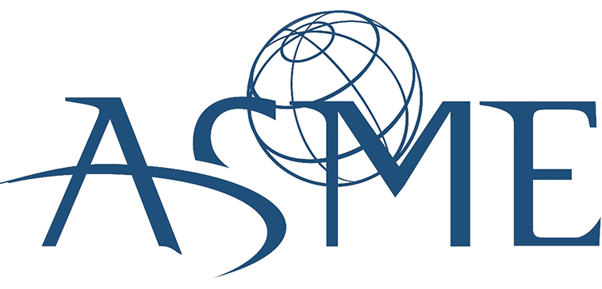
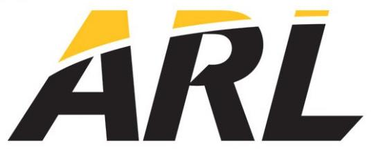

Richard J. Lucas
Resume
Updated 21 December 2016
(2016)  ASME C&S Connect Overlay
ASME C&S Connect Overlay
(2015) Voting System for ASME Staff
(2014) www.knowyourmacros.com

American Society of Mechanical Engineers
Project Engineer (August 2016 - Present)
Standards and Certifications Engineer (September 2012 - August 2016)
- Managing the development process for new and existing standards by working with volunteer members that are experts in their field, the public, and with other ASME staff.
 U.S. Army Research Laboratory
Summer Intern (2011, 2012)
- Analyzed peridynamics to determine the domain of applicability
- Used LAMMPS, characterized and quantified damage in molecular dynamics simulations
The University of Mississippi
Engineering Student Body Tutor (2010 - 2012)
- Physics, Mechanics of Materials, Calculus, Pre-Calculus
AngularJS (1.6) Bootstrap C/C++ CSS ExpressJS Git HTTP PostgreSQL MySQL JavaScript (ES 5/6) jQuery Linux Mandarin Microsoft Office Mocha (model/route testing) Mocha (UI) NodeJS PHP React/Redux Sequelize socket.io Test Driven Development Webpack
ASME Spot Recognition Award (2016)
ASME Fiscal Year 2016 Year-End Recognition Award (2016)
Dean’s Honor Roll (2009, 2011, 2012)
Chancellor’s Honor Roll (2010, 2011, 2012)
ASME Student Design Competition
Pi Mu Epsilon National Honorary Mathematics Society
The National Society of Leadership and Success
Sigma Alpha Lambda National Leadership and Honors Organization
An Assessment of Peridynamics for Pre and Post Failure Deformation. Richard Becker, Richard Lucas. Army Research Laboratory. Internal Publication. 2011. Download from www.dtic.mil